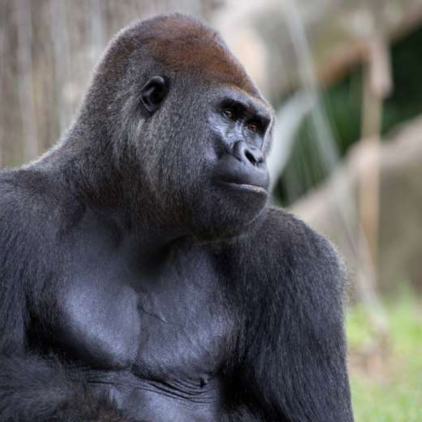

Gorilla camera
Western Lowland Gorilla

Western lowland gorillas live in troops led by a dominant silverback, several adult females,
and their offspring.
There are two species of gorilla, each containing two subspecies. The two species are
eastern and western, and the four sub-species are Cross River
and Western Lowland (are
sub-species of the Western species) and Grauer’s and Mountain (are sub-species of the
Eastern species).
Diet:
Herbivore (We provide a medley of fruits and vegetables to our western lowland gorillas)
Range:
Western Africa [VIEW MAP]
Habitat:
Rainforests (Simulation of the natural environment)
General Information:
There are two species of gorilla, each containing two subspecies. The two
species are eastern
and western, and the four sub-species are Cross River and
Western Lowland (are sub-species of
the Western species) and Grauer’s and Mountain (are sub-species of the Eastern species).
Western
gorillas can be distinguished from other gorilla subspecies by their brownish-gray hair,
auburn-colored crests and overall smaller size. Eastern gorillas tend to be black in color
and
larger in size. In all gorillas, males develop silver coloration along their backs as they
mature. The species is diurnal, which means they are active during the day, and of all the
great
apes, gorillas are the most terrestrial. This means that they primarily live on the ground,
although they do occasionally climb trees to feed and nest. They are also able to stand on
two
legs for short periods of time.
Physical features and characteristics:
Gorillas are the largest of all primates and reach physical maturity between
12 and 15 years of age. Males can be between 350 and 450 pounds, almost twice as much
as females, weighing in between 150 and 250 pounds.
Males stand between 5.5 to 6 feet tall.
Females are a bit smaller, standing between 4’7” to 4’11”. The males’ heads are large and
pointed due to the sagittal crest that forms the back of the top of the head. This crest
serves as the foundation for attachment of a great number of jaw muscle fibers, which allows
for the chewing power needed to process tough vegetation.
The vision and perception of western lowland gorillas is similar to that of humans.
Gorillas have a prominent brow ridge, small, flat ears, and hear about the same as humans.
The nose is broad, flat and fleshy. The wrinkles on a gorilla’s nose, known as a noseprint,
are like human fingerprints, and every individual’s noseprint is unique. Researchers use
these noseprints as identification markers in their studies, both in zoological settings
and in the wild.
Gorillas have 32 teeth, including sharp canines used for defense and breaking
through vegetation. Their molars have complicated patterns of cups and ridges that facilitate
chewing of tough plant fibers.
Gorillas’ faces, hands, and feet are bare, but the rest of their bodies are
covered with short, thin hair. Gorilla hands and feet are large, with leathery palms and soles,
and broad, flat nails Their hands are very dexterous and can pick up small, delicate objects.
Like their hands, their feet have opposable thumbs and toes. Like all apes, gorillas’ arms are
longer than their legs—a feature that allows them to walk on all fours. They are called
“knuckle-walkers,” meaning that they walk on the knuckles of their forelimbs and the soles
of their hind limbs. This form of locomotion develops calluses on the knuckles, preserving
the sensitivity of the fingertips necessary for
manipulating smaller objects.
Lifestyle and reproduction:
Gorillas tend to be shy, peaceful creatures; they are not normally aggressive
to other animals unless provoked. However, if they are provoked, they can be dangerous.
They can demonstrate aggression by charging towards perceived intruders. Typically,
they will not actually hit the intruder, but rush past, turn and then charge again.
Gorillas use a combination of vocalizations, visual signals and scents
to communicate. They are considered relatively quiet compared to other primates,
but do have at least 25 recognized vocalizations, including:
- Hooting: Can carry for a mile through the forest and is usually accompanied by display behavior such as chest beating, strutting, and vegetation slapping
- Screams: Sounds of alarm or warning
- Belches: Deep rumblings of contentment, comfort, or well-being
- Sharp Grunts: Used when discipline is required
- Whoop Barks: High-pitched barks denote curiosity
- Bark Grunt: Aggression
- Chuckles: Playfulness
Infants have three distinct vocalizations; these are similar to the cries
of a human baby. They will typically cry when hurt or frightened, resulting in an immediate
response from the mother.
Dominant males also have a distinctive smell that they use to communicate
with other troops and to maintain contact with their own troop. Perhaps the most recognizable
behavior performed by gorillas is chest-beating. It is primarily done by male gorillas at the
end of a display meant to intimidate intruding males or predators. The sound can be heard for
long distances. Females will chest-beat infrequently; they will typically beat their hands
against the insides of their thighs. Chest-beating can also indicate playful behavior,
however, especially in the young. Young gorillas play much like humans do, playing tag
and doing somersaults.
Western lowland gorillas live in family groups known as troops.
These troops can consist of 5 to 30 individuals, although the average size is 11.
The group is led by a dominant silverback male and contains several adult females and their young.
The females will typically bond with the silverback, but not necessarily with each other.
The silverback will remain dominant for as long as he can defeat competing males.
There are several younger, blackback males that remain in the group until
they are capable of challenging the silverback. These young males are often driven out of
the troop to live a solitary life or to live in a smaller group with other bachelors until
they establish their own troops. If a dominant silverback is displaced, the new dominant male
will typically kill the infants in the troop, sending the females prematurely
into reproductive cycling. This increases the male’s chances of siring offspring,
as his time as the dominant male is uncertain. As such, females consider a male’s
ability to fight paramount to their offspring’s survival.
On maturing, females will also leave their natal group to join a lone male
or another small group. This is vital to prevent inbreeding and to protect the gene pool.
Nesting typically occurs in the late afternoon, with the gorillas bedding
down for the night at sundown. The females and their offspring will build nests of leaves
and branches, while the dominant silverback will settle at the base of the tree, in order
to protect his family. At Zoo Atlanta, while the gorillas are outside, their indoor areas
are thoroughly cleaned; the walls and floors are scrubbed with
disinfectant. The gorillas
are offered hay in their indoor area at night and nest with this material, replicating
natural behavior.
Nesting typically occurs in the late afternoon, with the gorillas bedding
down for the night at sundown. The females and their offspring will build nests of leaves
and branches, while the dominant silverback will settle at the base of the tree, in order
to protect his family. At Zoo Atlanta, while the gorillas are outside, their indoor areas
are thoroughly cleaned; the walls and floors are scrubbed with
disinfectant. The gorillas
are offered hay in their indoor area at night and nest with this material, replicating
natural behavior.
In a troop, the single silverback male will mate with the females,
siring all the offspring of the troop. Females generally reach reproductive maturity
between 7 and 8 years of age, with males reaching maturity later, around 10 years of age,
due to competition. The potential breeding season is year-round and gestation typically
takes 256 days, or about 8.5 months. Labor can last anywhere from one to 4 hours. Babies
are usually born singly; twins are rare. Newborns weigh between 3 and 5 pounds and are
weaned around 2 to 3 years of age, but can be dependent on their mothers for up to 4 years.
The average interval between births for a female gorilla is four to six years.
Habitat:
Western lowland gorillas prefer the tall, lush tropical forest of west
and central Africa. The herbs, shrubs and vines that make up its diet grow best where
the open canopy allows plenty of light to reach the forest floor. These tropical forests
also contain a much higher diversity of arboreal substrates and foods, in particular fruit,
than mountainous habitats. Western lowland gorillas live primarily on the ground and build
sleeping nests on the ground or in the trees for the night.
Diet:
Western lowland gorillas are primarily herbivorous, feeding on plant parts
including seeds, leaves, stems, shoots, roots and flowers; however, they prefer fruit whenever
it’s in season. Occasionally they will eat insects, such as termites or ants, as a supplement
to their diet when they are readily available. Due to their dietary preferences, western
lowland gorillas spend a lot of their time in and around trees, especially fruit trees.
Even large males can sometimes be found up in the trees, but they are careful to stay near
a main trunk or on larger branches that are able to support their weight. Younger, lighter
gorillas may climb higher in trees, even swinging freely from branch to branch. Gorillas
never completely strip vegetation from a single area; rather, the rapid regrowth of
the vegetation they consume allows them to stay within a reasonable confined home range
for extended periods of time.
Here at Zoo, we provide a medley of fruits and vegetables to our western
lowland gorillas. These include apples, oranges, bananas, raisins, sweet potatoes, cabbage,
collards, and primate chow. In the morning, vegetables and fruit are chopped up and
scattered
around the habitat. From there, the gorillas come outside and forage for their food as they
would in the wild. Browse foods including bamboo, banana leaves, mulberry, elm and willow are
also scattered in their habitat.